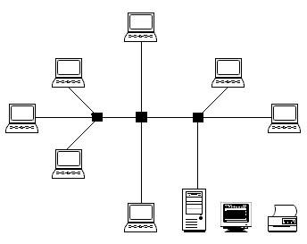
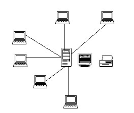
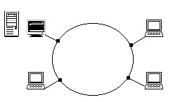
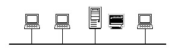
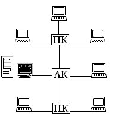
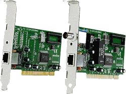
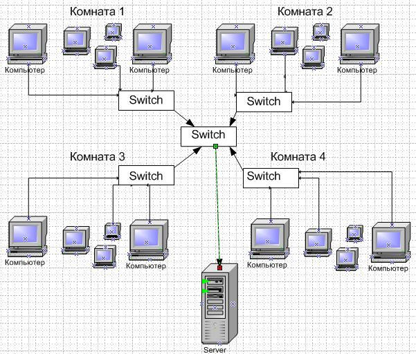

ЛАБОРАТОРНАЯ РАБОТА № 12
ПРОЕКТИРОВАНИЕ ЛОКАЛЬНОЙ
ВЫЧИСЛИТЕЛЬНОЙ СЕТИ
Теоретическая часть
Вычислительная сеть (ВС) состоит из вычислительных машин и сети передачи данных (сети связи). ВС классифицируются по геометрическим масштабам на глобальные (англ. Global Area Network, GAN), широкомасштабные (англ. Wide Area Network, WAN), региональные (англ. Metropolitan Area Network, MAN) и локальные вычислительные сети (англ. Local Area Network, LAN).
Под локальной вычислительной сетью (ЛВС) обычно понимают ВС, соединяющие вычислительные машины в одной комнате, здании или в нескольких близко расположенных зданиях. Сети связи ЛВС имеют в настоящее время следующие типичные характеристики: высокую скорость передачи данных (0.1 - 100 Мбит/с), небольшую протяженность (0.1-50 км), малую вероятность ошибки передачи данных (+1Е-8 - +1Е-11).
ЛВС - это система, составленная из отдельных модулей, которые можно добавлять и выстраивать в нужной конфигурации. Основными составными частями сети являются:
абонентские станции;
серверы сети;
сетевые адаптеры;
линии связи;
терминаторы;
ретрансляторы;
сетевое программное обеспечение.
Кроме основных компонент сеть может включать в состав блоки бесперебойного питания, резервные приборы, современные динамически распределяемые объекты и различные типы серверов (такие как файл-серверы, принт-серверы или архивные серверы).
Создавая ЛВС, разработчик стоит перед проблемой: при известных данных о назначении, перечне функций ЛВС и основных требованиях к комплексу технических и программных средств ЛВС построить сеть, то есть решить следующие задачи:
определить архитектуру ЛВС: выбрать типы компонент ЛВС;
рассчитать количество компонент ЛВС;
произвести оценку показателей эффективности ЛВС;
определить стоимость ЛВС.
При этом должны учитываться правила соединения компонентов ЛВС, основанные на стандартизации сетей, и их ограничения, специфицированные изготовителями компонент ЛВС.
Конфигурация ЛВС для АСУ существенным образом зависит от особенностей конкретной прикладной области. Эти особенности сводятся к типам передаваемой информации (данные, речь, графика), пространственному расположению абонентских систем, интенсивностям потоков информации, допустимым задержкам информации при передаче между источниками и получателями, объемам обработки данных в источниках и потребителях, характеристикам абонентских станций, внешним климатическим, электромагнитным факторам, эргономическим требованиям, требованиям к надежности, стоимости ЛВС и т.д.
Исходные данные для проектирования ЛВС могут быть получены в ходе предпроектного анализа прикладной области, для которой должна быть создана АСУ. Эти данные уточняются затем в результате принятия решений на этапах проектирования ЛВС и построения все более точных моделей АСУ, что позволяет в «Техническом задании на ЛВС» сформулировать требования к ней. Лучшая ЛВС - это та, которая удовлетворяет всем требованиям пользователей, сформулированным в техническом задании на разработку ЛВС, при минимальном объеме капитальных и эксплуатационных затрат. Данная лабораторная работа посвящена практическому изучению методов проектирования конфигурации ЛВС.
Проектирование конфигурации ЛВС относится к этапу проектирования технического обеспечения автоматизированных систем и осуществляется на этом этапе после распределения функции автоматизированной системы по абонентским станциям ЛВС, выбора типов абонентских станций, определения физического расположения абонентских станций.
Задание на проектирование включает требования к ЛВС, указания о доступных компонентах аппаратных и программных средств, знания о методах синтеза и анализа ЛВС, предпочтения и критерии сравнения вариантов конфигурации ЛВС.
Рассмотрим варианты топологии и состав компонент локальной вычислительной сети.
Топология ЛВС
Топология сети определяется способом соединения ее узлов каналами связи. На практике используются 4 базовые топологии:
звездообразная (рис. 12. 1 ,а , 12. 1 ,б);
кольцевая (рис. 12. 2);
шинная (рис. 12. 3);
древовидная или иерархическая (рис. 4).
Топология сети влияет на надежность, гибкость, пропускную способность, стоимость сети и время ответа [ 1, табл. 12. 1 ].
Выбранная топология сети должна соответствовать географическому расположению сети ЛВС, требованиям, установленным для характеристик сети, перечисленным в табл. 1. Топология влияет на длину линий связи.
Топология звезда Топология распределенная звезда
 
Рис.12. 1.
Сравнительные данные по характеристикам ЛВС Таблица 12. 1.
|
Р5. Характеристика |
Качественная оценка характеристик |
||
|
Шинной и древовидной сети |
Кольцевой сети |
Звездообразной сети |
|
|
I. Время ответа Юта. |
В маркерной шине
t отв.
предсказуемо и зависит от числа узлов сети.
В случайной шине |
tотв. Есть функция от числа узлов сети |
Toтв. зависит от нагрузки и временных характеристик центрального узла |
|
2. Пропускная способность С
|
В маркерной шине зависит от количества узлов. В случайной шине С увеличивается при спорадических малых нагрузках и падает при обмене длинными сообщениями в стационарном режиме |
С падает при добавлении новых узлов |
С зависит от производительности центрального узла и пропускной способности абонентских каналов |
|
З. Надежность
|
Отказы АС не влияют на работоспособность остальной части сети. Разрыв кабеля выводит из строя шинную ЛВС.
|
Отказ одной АС не приводит к отказу всей сети. Однако использование обходных схем позволяет защитить сеть от отказов АС |
Отказы АС не влияют на работоспособность остальной части сети. Надежность ЛВС определяется надежностью центрального узла |
Топология кольцо Топология линейная шина
 
Рис. 12. 2 Рис. 12. 3
Иерархическая сеть с концентраторами

АК - активный концентратор ПК - пассивный концентратор
Рис. 12. 4.
Выбор типов линий связи
В качестве линий связи могут выступать кабели со скрученными парами проводов (витые пары), коаксиальные кабели, волоконно-оптические кабели, радио, инфракрасные ИК-, СВЧ - каналы.
В набор параметров линий связи ЛВС входят: полоса пропускания и скорость передачи данных, способность к двухточечной, многоточечной и/или широковещательной передаче (то есть допустимые применения), максимальная протяженность и число подключаемых абонентских систем, топологическая гибкость и трудоемкость прокладки, устойчивость к помехам и стоимость.
При выборе типов кабеля учитывают следующие показатели:
стоимость монтажа и обслуживания;
скорость передачи информации;
ограничения на величину расстояния передачи информации (без дополнительных усилителей-повторителей (repeater);
безопасность передачи данных.
Главная проблема заключается в одновременном обеспечении показателей, например, наивысшая скорость передачи данных ограничена максимально возможным расстоянием передачи данных, при котором еще обеспечивается требуемый уровень защиты данных. Легкая наращиваемость и простота расширения кабельной системы влияют на ее стоимость.
Условия физического расположения помогают определить наилучшим образом тип кабеля и его топологию. Каждый тип кабеля имеет собственные ограничения по максимальной длине: витая пара обеспечивает работу на коротких отрезках, одноканальный коаксиальный кабель - на больших расстояниях, многоканальный коаксиальный а волоконно-оптический кабель - на очень больших расстояниях.
Скорость передачи данных тоже ограничена возможностями кабеля: самая большая - у волоконно-оптического, затем идут одноканальный коаксиальный, многоканальный кабели и витая пара. Под требуемые характеристики можно подобрать имеющиеся в наличии кабели.
В табл. 12. 2 приводятся характеристики линий связи ЛВС Ethernet.
Характеристики линий связи Ethernet Таблица 12. 2
|
Параметр |
Тип линии связи |
||
|
Тонкопроводная (моноканал) |
Толстопроводная (моноканал) |
Широкополосная (поликанал) |
|
|
Максимальная длина (без повторителей), м |
185 |
500 |
1900 |
|
Тип кабеля |
RG58 |
Коаксиальный кабель в тефлоновой или полихлорвиниловой оболочке |
Телевизионный коаксиальный кабель |
|
Максимальное число АС |
30 |
200 |
1023 |
|
Скорость передачи, Мбит/с |
10 |
10 |
10 |
Fast Ethernet
Fast Ethernet 802.3u не является самостоятельным стандартом, а представляет собой дополнение к существующему стандарту 802.3 в виде глав. Новая технология Fast Ethernet сохранила весь MAC уровень классического Ethernet, но пропускная способность была повышена до 100 Мбит/с. Следовательно, поскольку пропускная способность увеличилась в 10 раз, то битовый интервал уменьшился в 10 раз, и стал теперь равен 0,01 мкс. Поэтому в технологии Fast Ethernet время передачи кадра минимальной длины в битовых интервалах осталось тем же, но равным 5,75 мкс. Ограничение на общую длину сети Fast Ethernet уменьшилось до 200 метров. Все отличия технологии Fast Ethernet от Ethernet сосредоточены на физическом уровне. Уровни MAC и LLC в Fast Ethernet остались абсолютно теми же.
Официальный стандарт 802.3u установил три различных спецификации для физического уровня Fast Ethernet:
1. 100Base-TX - для двухпарного кабеля на неэкранированной витой паре UTP категории 5 или экранированной витой паре STP Type 1;
2. 100Base-T4 - для четырехпарного кабеля на неэкранированной витой паре UTP категории 3, 4 или 5;
3. 100Base-FX- для многомодового оптоволоконного кабеля, используются два волокна.
В Ethernet вводится 2 класса концентраторов: 1-го класса и 2-го класса. Концентраторы 1-го класса поддерживают все типы кодирования физического уровня (TX, FX, T4), т.е. порты могут быть разные. Концентраторы 2-го класса поддерживают только один тип кодирования физического уровня: либо TX/FX, либо T4.
Предельные расстояния от хаба до узла:
· TX – 100 м, FX – многомодовые: 412 м (полудуплекс), 2км (полный). Одномодовые: 412 м (полудуплекс), до 100 км (полный), T4 – 100 м.
· Концентратор 1-го класса в сети может быть только один, концентраторов 2-го класса – два, но м/д ними 5 м.
Витая пара (UTP)
Наиболее дешевым кабельным соединением является двухжильное соединение витым проводом, часто называемое витой парой" (twisted pair). Она позволяет передавать информацию со скоростью до 10-100 Мбит/с, легко наращивается, однако является помехонезащищенной. Длина кабеля не может превышать 1000 м при скорости передачи 1 Мбит/с. Преимуществами являются низкая цена и беспроблемная установка. Для повышения помехозащищенности информации часто используют экранированную витую пару. Это увеличивает стоимость витой пары и приближает ее цену к цене коаксиального кабеля.
Пять категорий UTP.
1). Традиционный телефонный кабель,по нему можно передавать речь, но не данные.
2). Способен передавать данные со скоростью до 4 Мбит/с. 4 витые пары.
3). Кабель, способный передавать данные со скоростью до 10 Мбит/с. 4 витых пар с девятью витками на метр.
4). Кабель, способный передавать данные со скоростью до 16 Мбит/с. 4 витых пар.
5). Кабель, способный передавать данные со скоростью до 100 Мбит/с. Состоит из четырех витых пар медного провода.
Коаксиальный кабель
Коаксиальный кабель имеет среднюю цену, помехозащищен и применяется для связи на большие расстояния (несколько километров). Скорость передачи информации от 1 до 10 Мбит/с, а в некоторых случаях может достигать 50 Мбит/с. Коаксиальный кабель используется для основной и широкополосной передачи информации.
Широкополосный коаксиальный кабель
Широкополосный коаксиальный кабель невосприимчив к помехам, легко наращивается, но цена его высокая. Скорость передачи информации равна 500 Мбит/с. При передаче информации в базисной полосе частот на расстояние более 1,5 км требуется усилитель, или так называемый повторитель (repeater). Поэтому суммарное расстояние при передаче информации увеличивается до 10 км. Для вычислительных сетей с топологией шина или дерево коаксиальный кабель должен иметь на конце согласующий резистор (terminator).
Ethernet-кабель
Ethernet-кабель также является коаксиальным кабелем с волновым сопротивлением 50 Ом. Его называют еще толстый Ethernet (thick) или желтый кабель (yellow cable). Он использует 15-контактное стандартное включение. Вследствие помехозащищенности является дорогой альтернативой обычным коаксиальным кабелям. Максимально доступное расстояние без повторителя не превышает 500 м, а общее расстояние сети Ethernet -около 3000 м. Ethernet-кабель, благодаря своей магистральной топологии, использует в конце лишь один нагрузочный резистор.
Cheapernet-кабель
Более дешевым, чем Ethernet-кабель, является соединение Cheapernet-кабель или, как его часто называют, тонкий (thin) Ethernet. Это также 50-омный коаксиальный кабель со скоростью передачи информации в 10 миллионов бит/с.
При соединении сегментов Cheapernet-кабеля также требуются повторители. Вычислительные сети с Cheapernet-кабелем имеют небольшую стоимость и минимальные затраты при наращивании. Соединение сетевых плат производится с помощью широко используемых малогабаритных байонетных разъемов(СР-50). Дополнительного экранирования не требуется. Кабель присоединяется к ПК с помощью тройниковых соединителей (Tconnectors). Расстояние между двумя рабочими станциями без повторителей можетсоставлять максимум 300 м, а общее расстояние для сети на Cheapemet-кабеле - около 1000 м. Приемопередатчик Cheapernet расположен на сетевой плате и используется как для гальванической развязки между адаптерами, так и для усиления внешнего сигнала.
Оптоволоконные линии
Наиболее дорогими являются оптопроводники, называемые также стекловолоконным кабелем. Скорость распространения информации по ним достигает нескольких гигабит в секунду. Внешнее воздействие помех практически отсутствует. Применяются там, где возникают электромагнитные поля помех или требуется передача информации на очень большие расстояния без использования повторителей. Они обладают противоподслушивающими свойствами, так как техника ответвлений в оптоволоконных кабелях очень сложна. Оптопроводники объединяются в ЛВС с помощью звездообразного соединения.
2 вида оптоволокна:
1) одномодовый кабель – используется центральный проводник малого диаметра, соизмеримого с длиной волны света (5-10мкм). При этом все лучи света распространяются вдоль оптической оси световода, не отражаясь от внешнего проводника. В качестве источника света используют лазер. Длина кабеля – 100км и более.
2) многомодовый кабель – используют более широкие внутренние сердечники (40-100мкм). Во внутреннем проводнике одновременно существует несколько световых лучей, отражающихся от внешнего проводника под разными углами. Угол отражения наз. модой луча. В качестве источника излучения применяются светодиоды. Длина кабеля – до 2км.
Беспроводные компьютерные сети
Беспроводные компьютерные сети — это технология, позволяющая создавать вычислительные сети, полностью соответствующие стандартам для обычных проводных сетей (например, Ethernet), без использования кабельной проводки. В качестве носителя информации в таких сетях выступают радиоволны СВЧ-диапазона.
Существует два основных направления применения беспроводных компьютерных сетей:
1) Работа в замкнутом объеме (офис, выставочный зал и т. п.);
2) Соединение удаленных локальных сетей (или удаленных сегментов локальной сети).
Для организации беспроводной сети в замкнутом пространстве применяются передатчики со всенаправленными антеннами. Стандарт IEEE 802.11 определяет два режима работы сети — Ad-hoc и клиент-сервер. Режим Ad-hoc (иначе называемый называемый «точка-точка») — это простая сеть, в которой связь между станциями (клиентами) устанавливается напрямую, без использования специальной точки доступа. В режиме клиент-сервер беспроводная сеть состоит, как минимум, из одной точки доступа, подключенной к проводной сети, и некоторого набора беспроводных клиентских станций. Поскольку в большинстве сетей необходимо обеспечить доступ к файловым серверам, принтерам и другим устройствам, подключенным к проводной локальной сети, чаще всего используется режим клиент-сервер. Без подключения дополнительной антенны устойчивая связь для оборудования IEEE 802.11b достигается в среднем на следующих расстояниях: открытое пространство — 500 м, комната, разделенная перегородками из неметаллического материала — 100 м, офис из нескольких комнат — 30 м. Следует иметь в виду, что через стены с большим содержанием металлической арматуры (в железобетонных зданиях таковыми являются несущие стены) радиоволны диапазона 2,4 ГГц иногда могут вообще не проходить, поэтому в комнатах, разделенных подобной стеной, придется ставить свои точки доступа.
Для соединения удаленных локальных сетей (или удаленных сегментов локальной сети) используется оборудование с направленнымиантеннами, что позволяет увеличить дальность связи до 20 км (а при использовании специальных усилителей и большой высоте размещения антенн — до 50 км). Причем в качестве подобного оборудования могут выступать и устройства Wi-Fi, нужно лишь добавить к ним специальные антенны (конечно, если это допускается конструкцией). Комплексы для объединения локальных сетей по топологии делятся на «точку-точку» и «звезду». При топологии «точка-точка» (режим Ad-hoc в IEEE 802.11) организуется радиомост между двумя удаленными сегментами сети. При топологии «звезда» одна из станций является центральной и взаимодействует с другими удаленными станциями. При этом центральная станция имеет всенаправленную антенну, а другие удаленные станции — однонаправленные антенны. Применение всенаправленной антенны в центральной станции ограничивает дальность связи дистанцией примерно 7 км. Поэтому, если требуется соединить между собой сегменты локальной сети, удаленные друг от друга на расстояние более 7 км, приходится соединять их по принципу «точка-точка». При этом организуется беспроводная сеть с кольцевой или иной, более сложной топологией.
Мощность, излучаемая передатчиком точки доступа или же клиентской станции, работающей по стандарту IEEE 802.11, не превышает 0,1 Вт. Для сравнения — мощность, излучаемая мобильным телефоном, на порядок больше. Поскольку, в отличие от мобильного телефона, элементы сети расположены далеко от головы, в целом можно считать, что беспроводные компьютерные сети более безопасны с точки зрения здоровья, чем мобильные телефоны.
Если беспроводная сеть используется для объединения сегментов локальной сети, удаленных на большие расстояния, антенны, как правило, размещаются за пределами помещения и на большой высоте.
Выбор абонентских станций
Абонентские станции - персональные компьютеры, приспособленные для работы в сети при помощи установки сетевой платы, например, платы Enhemet, либо мощные и эффективные компьютеры, разработанные специально для работы в сети и имеющие сетевое аппаратное и программное обеспечение (рабочие станции).
Выбор персонального компьютера для абонентской станции определяется перечнем функций по обработке данных, необходимых конкретному пользователю (например, для автоматизированного рабочего места технолога, конструктора, бухгалтера, системотехника и т.д.). Однако из анализа современного рынка средств вычислительной техники можно определить следующие желательные компоненты ПК для АС: 32-разрядный высокоскоростной процессор с сопроцессором, монитор высокого разрешения, манипулятор "мышь", многозадачную операционную систему, ОЗУ достаточного объема, жесткий диск с быстрым доступом и большим объемом памяти, при необходимости средства аудиоввода и аудиовывода, развитую графику с высоким разрешением, встроенные сетевые средства.
При выборе конечной конфигурации ПК и его дальнейшей эксплуатации следует помнить, что на устойчивость работы системы влияют такие параметры, как хорошее охлаждение устройств и блоков ПК, своевременное и регулярное их техническое обслуживание (удаление пыли, смазка вентиляторов охлаждения и т.д.) и многое другое.
Поскольку АРМ будет работать продолжительное время без перерыва необходимо предусмотреть систему автономного питания ПК - блок бесперебойного питания UPS (universal power supply). Он предотвратит потерю данных при внезапных скачках напряжения сети питания, обеспечит возможность сохранить промежуточные результаты на диск и корректно выключить компьютер в случае внезапного отключения сети переменного тока. Тем самым мы защитим чувствительные блоки АРМ от перегрузок по питанию и обеспечим более длительный срок его эксплуатации.
Выбор серверов
Файл-сервер - это компьютер, который предоставляет пользователям сети файлы, то есть позволяет пользователям совместно использовать программы и данные. Часто, хотя и не всегда, файл-сервер имеет для хранения данных память значительно большей емкости, чем у других компьютеров. Он может также иметь значительно большее ОЗУ и несколько печатающих устройств, модемов и накопителей на магнитной ленте. Почти во всех случаях имеется программное обеспечение, которое отличает файл-сервер от компьютера обычной рабочей станции ЛВС. Например, обычный персональный компьютер может быть файл-сервером ЛВС, если в нем работает программное обеспечение, которое позволяет, другим пользователям сети обращаться к нему и использовать его ресурсы. Чаще же в качестве файл-серверов используются более мощные машины, поскольку они лучше приспособлены для одновременного обслуживания многих пользователей.
Программное обеспечение файл-сервера (ФС) - часть сетевой операционной системы, которое предоставляет ресурсы другим пользователям вычислительной сети.
Критическим моментом в работе ФС является его способность быстро находить данные и без задержки выдавать их обратно на запрашивающую рабочую станцию. На производительность ФС оказывают влияние многие факторы. Сюда входят: скорость работы сетевой интерфейсной платы, тип и длина кабеля, эффективность сетевого программного обеспечения, тип выполняемой прикладной программы, число пользователей в сети и объем свободной оперативной памяти. Пожалуй, важнейшим фактором, влияющим на производительность файл-сервера, является скорость работы жесткого диска. На уменьшение времени ответа влияет наличие в ФС дисковой кэш-памяти, то есть области оперативной памяти для запоминания данных, считанных с диска в последний раз. Кэш-память позволяет исключить ряд дополнительных обращений к диску.
Отказоустойчивость ФС обеспечивается: проверкой правильности записей на диске ФС, хранением таблицы расположения файлов на другом жестком диске, дублированием контроллера и диска, зеркальным копированием диска (RAID-массивы). Зеркальное копирование диска - это система, которая использует два идентичных жестких диска: исходный диск и его зеркальную копию. При записи данных на диск происходит запись и на диск с зеркальной копией. При отказе исходного диска зеркальная копия выполняет его роль без потери данных или простоя системы.
Первоначально выбор ФС основывается на текущих пользователях и прикладных программах, однако по мере того, как ЛВС будет получать признание, к ней будут добавлены новые абонентские станции и прикладные программы. В конечном счете ФС будет не в состоянии справляться с нагрузкой, и эксплуатационные характеристики начнут снижаться. Поэтому одной из важнейших задач стратегического планирования развития ЛВС является правильный выбор файл-сервера одного или нескольких.
Выбор сетевых адаптеров
Центральный процессор соединяется с периферийным оборудованием специальным устройством. Для подключения одного ПК к другому требуется устройство сопряжения, которое называют сетевым адаптером или сетевым интерфейсом, модулем, картой. Оно вставляется в соответствующее гнездо материнской платы (motherboard). Каждая сетевая плата должна быть подключена с индивидуальным адресом, который известен файловому серверу и рабочим станциям.
Файловый сервер должен быть снабжен быстродействующей сетевой 100/1000 Mb/s платой.
Рабочие станции в ЛВС. взаимодействуют для совместной обработки имеющихся данных, например, для запуска пользовательского программного обеспечения с файлового сервера. Это означает, что при центральном расположении накопителя информации может возникнуть узкое место. При возрастании количества рабочих станций увеличивается вероятность того, что к серверу "хлынет" большой поток запросов. Поэтому серверу необходима сетевая плата повышенной производительности, т.е. ее производительность должна быть больше производительности сетевых адаптеров для локальных рабочих мест.
При подключении к вычислительной сети большого количества рабочих мест, требующих обращения к файловому серверу, существует опасность "коллапса" данных, возникающего, как и в системе связи, из-за высокого потока заявок.
Сетевые адаптеры определяют большую часть характеристик аппаратных средств ЛВС. Сюда входят: тип кабеля, топология, система обращения к кабелю, скорость передачи данных. В настоящее время большую часть рынка сетевых адаптеров занимают адаптеры Fast Ethernet, использующие протокол IEEE 802.3.

Рис. 12. 5.
Плата адаптера сети имеет четыре основные характеристики, обычно используемые для предсказания ее эффективности:
скорость передачи информации;
метод доступа;
встроенный процессор;
разрядность передаваемой кодовой комбинации (8-, 16-, 32-разрядные и т.д. сетевые адаптеры).
Выбор ретрансляторов
В архитектуре открытой вычислительной интерсети в терминах эталонной модели ВОС/МОС определены 4 типа ретрансляторов, сопрягающих отдельные сети на различных уровнях: повторители, коммутаторы, мосты и шлюзы.
Усилитель, или так называемый повторитель (repeater), требуется при передаче информации в базисной полосе частот на расстояние, более чем допустимое для данного типа кабеля (максимальная длина линий связи различного типа, на которой не требуется повторитель, приведена в табл. 2).
Для подключения большого числа рабочих станций в ЛВС с древовидной структурой применяют сетевые усилителя и/или коммутаторы. Коммутатор (switch), обладающий одновременно и функциями усилителя, называют активным концентратором.
Мост -это аппаратно-программный блок, который обеспечивает "прозрачное" соединение нескольких локальных сетей либо нескольких сегментов одной и той же сети, имеющих различные протоколы. Внутренние мосты соединяют большинство ЛВС с помощью сетевых плат в файловом сервере. Эти интерфейсные платы со специальным программным обеспечением называют внутренним мостом. При внешнем мосте используется рабочая станция в роли сервисного компьютера с двумя сетевыми адаптерами от двух различных, однако однородных вычислительных сетей. Соединение с другими ЛВС осуществляется для всех подключенных рабочих станций через этот сервисный компьютер - мост. Пользователь видит только логическую связь.
В том случае, когда соединяемые сети отличаются по всем уровням управления, используется оконечная система типа шлюз, в которой согласование осуществляется на уровне прикладных процессов. С помощью межсетевого шлюза соединяются между собой системы, использующие различные операционные среды и протоколы высоких уровней. В отличие от мостов, межсетевые шлюзы являются таким аппаратно-программным решением, при котором различные операционные системы, протоколы передачи данных, несогласованные скорости передачи информации, управление мониторами и используемые коды (например, код EBCDIC для больших ЭВМ, код ASCII для ПК) согласуются друг с другом для передачи информации.
Межсетевое взаимодействие может быть организовано как посредством мостового соединения, то есть между сетями с одинаковой структурой протокола, так и посредством шлюзов для вычислительных сетей, имеющих несовместимые структуры протоколов обмена информацией.
Этапы конфигурирования ЛВС
Конфигурирование ЛВС - это многокритериальная оптимизационная задача, так как на выбор конфигурации ЛВС влияет большое число факторов. В качестве целевой функции при решении этой задачи можно взять минимизацию величины стоимости ее аппаратного и программного обеспечения при условиях удовлетворения всех требований пользователя к передаче информации в полном объеме, времени ответа, пропускной способности и надежности сети.
Проектирование конфигурации ЛВС требует решения ряда задач, включающих выбор комплекса программно-аппаратных средств локальной вычислительной сети, выбор типов сетей связи в данном комплексе, трассировку кабельной сети ЛВС в зданиях и помещениях. В процессе построения ЛВС необходимо учитывать ряд требований прикладного характера, например, физическое расположение пользователей, количество и типы оконечных систем, требования к передаче данных (типы данных, среднюю нагрузку), требования пользователей к программным и аппаратным ресурсам. Расстояние между оконечными системами, наличие несовместимых оконечных систем и требование к контролю доступа пользователей к отдельным участкам ЛВС могут привести к необходимости предусматривать в составе сети различные шлюзы и мосты. В любой ЛВС существенным фактором является максимально достижимая пропускная способность сети связи. Она характеризует предел допустимых функциональных возможностей сети. Поэтому перед выбором ЛВС необходимо оценить, какая пропускная способность требуется пользователям данной прикладной области.
Вот некоторые отличительные характеристики и факторы, влияющие на выбор комплекса программно-аппаратных средств локальных вычислительных сетей и проектирование соответствующей конфигурации:
1) характеристики среды передачи информации или кабельной системы, такие как: помехозащищенность, защита от климатических воздействий, протяженность без промежуточного усиления сигнала, стоимость приобретения и установки;
2) максимальная протяженность сети;
3) предполагаемое количество оконечных систем;
4) основная сфера применения (на производственном предприятии, в учреждении или в учебной сфере);
5) функциональное назначение, то есть классы решаемых задач (научная деятельность, образование, резервирование мест, удаленный ввод/вывод, "распределенная обработка данных, управление и учет, финансовые операции);
6) тип передаваемой информации (данные, изображения, речь);
7) оценка пропускной способности сети;
8) сетевое программное обеспечение;
9) интерсетевое обеспечение (необходима ли связь с другими сетями ЭВМ);
10) показатель надежности сети в целом и отдельных ее частей;
Проектирование конфигурации ЛВС проходит через три основных этапа:
1) определение требований к ЛВС;
2) синтез альтернативных конфигураций ЛВС;
3) выбор наиболее предпочтительной конфигурации из имеющихся вариантов.
Проектирование ЛВС необходимо производить с учетом стратегического планирования развития АСУ, принимая во внимание возможность увеличения количества, АС в ЛВС, подключения новых участков ЛВС в других подразделениях предприятия (учреждения).
Исходные данные для проектирования ЛВС представляют собой формальное описание конкретной прикладной области (например, цеха механообработки, администрации производственного объединения, бухгалтерии, отдела кадров и т.д.). Основой является план зданий и помещений с отмеченными на нем местоположениями существующих ЭВМ.
Практическая часть
Исходные данные к заданию:
Пользователи: студенты, преподаватели, инженеры, программисты, лаборанты, техники кафедры автоматизированных систем управления БГТУ.
Рекомендуемое число клиентских станций: 30-60 с расположением в 4-5 комнатах.
Функции:
1) реализация учебного процесса на лабораторных, практических занятиях, выполнение курсового и дипломного проектирования;
2) организация учебного процесса, подготовка к проведению занятий, разработка методического обеспечения;
3) разработка программного обеспечения для работы в сети;
4) профилактика и ремонт оборудования.
Расчет стоимость оборудования ЛВС:
предлагается провести по прайс-листу сетевого оборудования одной из компаний г.Минска на дату проектирования ЛВС. В список включить только аппаратные средства (в т.ч. системы резервного копирование, бесперебойного питания, зеркалирования …), программное обеспечение не учитывать при расчете стоимости.
Включить затраты по проектированию и монтажу ЛВС.
Требования к проектируемой сети
Проектируемая ЛВС должна удовлетворять целому ряду требовании. Наиболее значительные из них связаны с передачей данных и состоят в следующем:
ЛВС должна выполнять разнообразные функции по передаче данных, включая пересылку файлов, поддержку терминалов (в том числе графических), электронную почту, обмен с внешними запоминающими устройствами, обработку сообщений доступ к файлам и базам данных.
ЛВС должна допускать подключение большого набора стандартных и специальных устройств, в том числе: ЭВМ, терминалов, устройств внешней памяти, принтеров, графопостроителей, факсимильных устройств, контрольного и управляющего оборудования, аппаратуры подключения к другим ЛВС и сетям (в том числе и к телефонным) и т.д.
ЛВС должна доставлять данные адресату с высокой степенью надежности (коэффициент готовности сети должен быть не менее 0.96), должна соответствовать существующим стандартам, обеспечивать "прозрачный" режим передачи данных, допускать простое подключение новых устройств и отключение старых без нарушения работы сети длительностью не более 1 с ; достоверность передачи данных должна быть не больше +1Е-8.
Перечень задач по проектированию ЛВС
1. Выбрать топологию ЛВС ( и обосновать выбор).
2. Нарисовать функциональную схему ЛВС и составить перечень аппаратных средств.
3. Выбрать оптимальную конфигурацию ЛВС.
4. Произвести ориентировочную трассировку кабельной сети и выполнить расчет длины кабельного соединения для выбранной топологии с учетом переходов между этажами. Поскольку существуют ограничения на максимальную длину одного сегмента локальной сети для определенного типа кабеля и заданного количества рабочих станции, требуется установить необходимость использования повторителей.
Содержание отчета
1. Перечень этапов проектирования конфигурации ЛВС с указанием принятых проектных решений.
Выбор топологии:
Выбрана топология звезда.
|
Характеристика |
Качественная оценка характеристик |
|
Звездообразной сети |
|
|
I. Время ответа Юта. |
Toтв. зависит от нагрузки и временных характеристик центрального узла |
|
2. Пропускная способность С
|
С зависит от производительности центрального узла и пропускной способности абонентских каналов |
|
З. Надежность
|
Отказы АС не влияют на работоспособность остальной части сети. Надежность ЛВС определяется надежностью центрального узла |
Выбор кабеля:
Будет использоваться UTP cat.5e. (недорогой, обеспечивает высокую скорость передачи инфорации).
Выбор оборудоания:
Сетевой адаптер Realtek Nic-R1 10/100
Сетевой адаптер Realtek Nic-G2 10/100/1000
Switch D-Link DGS-1005D 5 ports 10/100/1000
Switch D-Link DES-1016D 16 ports 10/100
2. Функциональная схема ЛВС.

Рис. 12. 6.
3. Результаты расчетов стоимости ЛВС (свести в таблицу с указанием наименования, количества единиц, цены и стоимости).
|
Расценки на оборудование/материалы/работы |
Цена |
Кол-во |
Стоимость |
|
Сетевой адаптер Realtek Nic-R1 10/100 Mbit/s |
20 000р. |
60 |
1 200 000р. |
|
Сетевой адаптер Realtek Nic-G2 10/100/1000 Mbit/s |
40 000р. |
1 |
40 000р. |
|
Switch D-Link DGS-1005D 5 ports 10/100/1000 Mbit/s |
100 000р. |
1 |
100 000р. |
|
Switch D-Link DES-1016D 16 ports 10/100 Mbit/s |
125 400р. |
4 |
501 600р. |
|
Кабель UTP cat. 5e, 305 м. (медь) |
242 250р. |
2 |
484 500р. |
|
Разъём RJ-45 100 шт. |
42 750р. |
2 |
85 500р. |
|
Розетка RJ-45 1 шт. |
6 000р. |
70 |
420 000р. |
|
Стоимость материалов и сетевого оборудования |
|
|
2 831 600р. |
|
Установка подрозетника на стену из кирпича или бетона, за 1 шт. |
5 000р. |
70 |
350 000р. |
|
Установка розетки RJ-45 Cat 5, Сat 5e, Cat 6 . , в подрозетник, за 1 порт |
10 000р. |
70 |
700 000р. |
|
Обжим коннектора (RJ-11, RJ-45), за 1 шт. |
2 000р. |
200 |
400 000р. |
|
Укладка кабеля UTP, STP (4-х парного) в кабель-канал, за 1 м. |
750р. |
460 |
345 000р. |
|
Установка кабель-канала на стены из кирпича или бетона: короб менее 60мм, за 1м. |
4 000р. |
460 |
1 840 000р. |
|
Установка аксессуаров для кабель-каналов (углы, стыки , переходы): короб менее 60мм, за 1шт. |
750р. |
50 |
37 500р. |
|
Сверление сквозного отверстия более 500мм d=12мм, за 1 шт. |
37 500р. |
5 |
187 500р. |
|
Сборка и установка шкафа телекоммуникационного настенного, за 1 шт. |
75 000р. |
5 |
375 000р. |
|
Установка оборудования в шкаф (патч-панель, органайзер, активное оборудование, UPS и т.д.), за 1 шт. |
12 500р. |
5 |
62 500р. |
|
Тестирование и маркировка 1 порта линк-тестером, за порт |
2 500р. |
65 |
162 500р. |
|
Прочие дополнительные работы (услуга программиста) за 1 н/ч |
50 000р. |
16 |
800 000р. |
|
Стоимость работ по монтажу ЛВС |
|
|
5 260 000р. |
|
Компьютер Athlon-5200X2/320Гб/2048Мб DDR/VC 6100 256 Мб/350W/DVD-RW/клав.мышь/19" ЖКИ |
1 211 250р. |
61 |
73 886 250р. |
|
ИТОГО |
|
|
81 977 850р. |